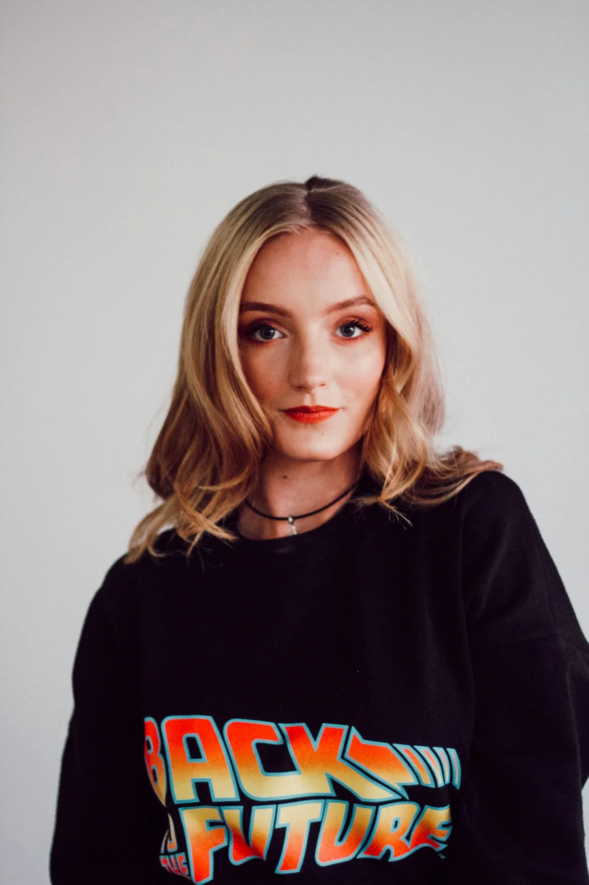

Core Program
Signature Treatments

Cascade Immersion
90 minutes
Full immersion under the main waterfall with guided breathwork protocol. The most direct way to experience the sanctuary's full negative ion field.

Thermal Circuit
3 hours
Six cycles of cold cascade plunge and hot spring immersion, spaced across a morning. The definitive cardiovascular and nervous system reset.

Sound Bath
60 minutes
Waterfall acoustic meditation with Tibetan singing bowls tuned to complement the valley's natural frequency. Conducted at the lower cascade pool at dusk.

Stone & Water Ritual
120 minutes
VELLUM's signature treatment. River-warmed stones applied in flowing massage technique as waterfall mist surrounds the treatment platform.